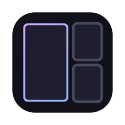

Your windows, arranged for you
Open an app and Shoji gives it a place beside the others. No windows piled on top of each other, no dragging and resizing, no hunting for the one underneath — and ten workspaces, one click away in the menu bar.
Most of us spend a surprising part of the day moving windows: dragging one out of the way, resizing another, clicking around to find the one that's hidden underneath.
Shoji does that for you. Every window you open gets its own space on the screen, side by side with the others, and they make room for each other as windows open and close. Put your mail on one workspace, your browsing on another and your music on a third, and switch between them in an instant.
It works with the apps you already use. And when you quit Shoji, every window — from every workspace — comes back onto your screen.
Each new window takes half of the space beside the current one, with neat gaps in between. Drag the line between two windows to give one more room.
Numbered in the menu bar, next to the clock. Click one to switch — instantly, with no sliding animation.
Hold Option and use the arrow keys to move between windows, or a number to change workspace. Or just use the mouse — both work.
Pick from seventeen colour themes, dark and light. A theme can also change your wallpaper, switch the Mac between Dark and Light, and set its accent colour.
Choose the gaps between windows, how see-through they are, and which apps should always float on top instead of taking a place.
Shoji Machines runs Linux on your Mac, and Shoji Containers shows what Docker is running. Both are included — use them if you need them.
Everything works with the mouse too. Press Option / any time to see every shortcut.
| Option ← → ↑ ↓ | Move between windows |
|---|---|
| Option Shift ← → ↑ ↓ | Swap a window with its neighbour |
| Option 1 … 0 | Go to a workspace |
| Option Shift 1 … 0 | Send the window to a workspace |
| Option F | Make the window fill the screen, and back |
| Option Q | Close the window |
| Option Shift D | Open an app by typing its name |
| Option , | Settings |
Prefer another key than Option? Settings lets you use Control-Option or Command instead.
Shoji's own workspaces take the place of the Mac's Spaces, so keep to a single Space. For now Shoji arranges windows on your main display only.
For Macs with Apple silicon (M1 or newer) running macOS 13 Ventura or later.